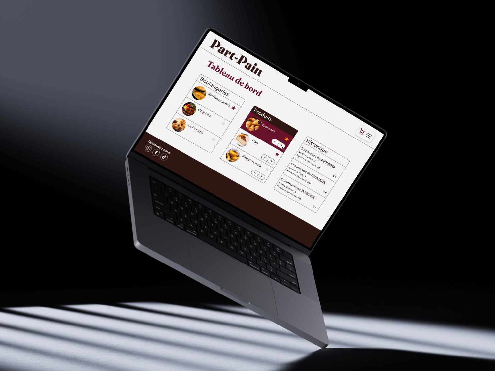

PART-
PAIN
Conception UX/UI d'un site web responsive de livraison de produits de boulangeries artisanales. Un projet fil rouge dans le cadre de ma formation au SERFA de Mulhouse, centré sur la recherche utilisateur, l'architecture d'information et le prototypage haute-fidélité.

FICHE_TECHNIQUE
DU PROJET
REMETTRE LA
BOULANGERIE
AU CENTRE
Part-Pain est un concept d'application permettant aux utilisateurs de découvrir et de se faire livrer les produits de boulangeries artisanales atypiques de leur région. Face à la standardisation de l'offre alimentaire, Part-Pain mise sur la valorisation du savoir-faire local.
Le défi UX : concevoir une expérience d'achat intuitive qui met en valeur l'aspect artisanal des produits tout en offrant la fluidité attendue d'une app de livraison moderne.
- 01 Cartographier les besoins utilisateurs (UX Research)
- 02 Concevoir l'architecture de l'information
- 03 Définir les user flows et le parcours d'achat
- 04 Prototyper une interface haute-fidélité

DIRECTION
VISUELLE
L'identité visuelle de Part-Pain s'articule autour d'un rouge bordeaux profond qui évoque la chaleur des boulangeries artisanales. La typographie expressive du logotype — emprunts aux serifs haute couture — positionne l'application comme un acteur premium dans l'univers de la foodtech locale.
L'interface explore une navigation minimaliste : grande hero image, hiérarchie typographique forte, et CTA contrastés pour guider l'utilisateur vers l'action principale.
RESEARCH
Interviews utilisateurs, analyse concurrentielle et définition des personas.
DISCOVERARCHITECTURE
User flows, card sorting et définition de l'arborescence de l'app.
DEFINEPROTOTYPE
Wireframes BF puis itérations vers un prototype HF sur Figma.
DESIGNTESTS
Tests d'utilisabilité et itérations basées sur les retours terrain.
VALIDATE